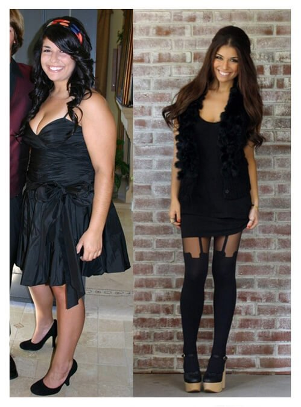
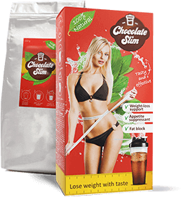

Oamenii din SUA slăbesc foarte mult, dar o femeie din România a bătut recordul.
Un număr mare de ziare menționează situații în care oamenii obezi reușesc să slăbească foarte mult. Toate acestea datorită unor metode de slăbit dezvoltate de nutriționiștii din Minnesota. Chiar și bărbații și femeile pentru care dietele și exercițiile fizice nu au niciun rezultat reușesc să slăbească 10-13 kg pe lună cu această metodă.
Cu toate acestea, cea mai mare performanță îi aparține unei fete din România. Melania, de 28 de ani, care nu le-a dat nicio șansă americanilor - a pierdut 24 kg în mai puțin de două luni , fără diete sau exerciții! În ciuda acestei schimbări dramatice în greutate, nu a avut nicio problemă de sănătate, menține o greutate corporală stabilă de mai bine de cinci luni și este mai fericită ca niciodată.

Melania, 28 de ani: Mă simțeam ca și cum corpul meu se transformase într-un motor de ardere a caloriilor. Grăsimea a început să dispară de pe șoldurile mele, celulita s-a redus, iar burta mea a devenit mai mică zi după zi.
Cum a pierdut 24 kg într-un timp atât de scurt? Și pe ce se bazează această metodă americană?
Declarația Melaniei:
Viața mea nu a fost niciodată orientată spre pierderea în greutate, îmi place să beau bere, să mănânc bine și nu am fost niciodată pasionată de mersul la sală, nici de îngrijirea personală. Prin urmare, nu am fost o femeie slabă și atrăgătoare. Asta nu părea să-l deranjeze pe soțul meu, dar din când în când le mai spunea prietenilor:
„Melania trebuie să dea jos măcar 20 kg. Cântărește mai mult decât mine...”
Nu îmi plăcea asta, dar nu îl învinovățesc, pentru că nu aveam grijă de mine, în special în ultimii patru ani din viața mea. Am încercat să fac schimbări de multe ori, am încercat cu adevărat, o alimentație mai sănătoasă, calcularea numărului de calorii și exerciții fizice, dar nu eram foarte familiară cu toate acestea. Purtam haine XXL și uram să merg la cumpărături. Desigur, am făcut ceva efort și am încercat diferite terapii, dar era clar că totul va eșua în final. Cea mai mare realizare a apărut exact pe 13 ianuarie.
Îmi amintesc că era o zi însorită și relaxantă și nu exista niciun semn care să indice că schimbarea era iminentă odată cu sosirea acelui pachet, plin de pudră delicioasă magică.
Am primit pachetul care mi-a fost trimis de un prieten din SUA, împreună cu un card roz mic, pe care scria: „Încearcă-l Meli, ești încă frumoasă, dar trebuie să ai mai multă grijă de tine!” Nu e niciodată prea târziu! Lovitura...
„Lovitura supremă pentru pierderea în greutate”
Conținea o pudră delicioasă care este făcută pe principiul abdomenului plat și se referă la completarea componentelor care lipsesc din corp și care ard excesul de grăsime de pe abdomen. Poate fi acesta motivul pentru care nicio dietă nu a funcționat în cazul meu? Eram curioasă. Am început să caut informații despre principiul abdomenului plat și despre acel produs și am citit mii de opinii de pe website-urile americane. Oamenii scriau că produsul este soluția perfectă pentru un metabolism lent și nu doar că este foarte eficient, ci mai mult de atât - nu creează dependență. Pe atunci nu se găsea produsul în magazinele din țară. Am primit două pachete gratuite, care pot fi folosite pentru o cură de două luni. Am preparat o cană din pudra magică zilnic, după fiecare mic dejun sau în locul acestuia și am început, de asemenea, să beau mai multă apă. Atâta tot - nicio dietă specială, niciun exercițiu fizic. Greutatea mea a început să scadă constant încă din prima zi.
„Simțeam ca și cum grăsimea mea s-ar fi evaporat! Hainele au început să se așeze mai bine pe corpul meu!”
„Mă simțeam ca și cum corpul meu s-ar fi transformat într-un motor de ardere a caloriilor - burta devenea tot mai mică zi după zi , conturul mușchilor a început să se vadă aproape imediat. După 8 săptămâni, cântăream 55 kg . Pierdusem 24 kg. Cu siguranță arăt cu câțiva ani mai tânără acum, mai feminină, hainele moderne mi se potrivesc mai bine și mă simt mai atrăgătoare. Soțul meu este în sfârșit mândru de mine. Ies mai des și vreau să arăt tuturor noul meu corp. Am mai multă energie în interior, iar viața mea pare acum de 10 ori mai bună.”
L-am întrebat pe nutriționistul dr. Mihai Groza, care folosește această metodă pentru pacienții săi obezi, de unde vine puterea suplimentului ?
Puterea se bazează pe un ingredient natural unic - Cacao naturală - accelerează arderea grăsimilor și îmbunătățește sistemul imunitar pe parcursul curei. Elimină pofta de dulciuri și produce dopamină (hormonul fericirii). De asemenea, are și alți compuși la fel de importanți. Fibrele de ovăz reduc apetitul, tonifică și îți dau un surplus de energie. Proteina din zer conține cianidină, care blochează dezvoltarea celulelor adipoase și este o sursă naturală de antioxidanți. Glucomannanul te umple de energie și previne depunerile de grăsime în zonele problematice. Conține și un amestec de vitamine și minerale care echilibrează metabolismul grăsimilor, îmbunătățește funcționarea întregului corp și reduce colesterolul din sânge.
Extractul din lecitină de soia este un arzător natural de grăsime și blochează depunerea de grăsime.
| Dietă simplă pentru slăbit |
Slăbire asistată
cu extract de cacao naturală |
| țesutul adipos (cel mai greu de ars) | |
| Procesul lent al arderii grăsimii corporale |
C acționează din
interior,
accelerând arderea grăsimilor |
Oamenii au 3 tipuri de grăsime, dintre care cea mai nocivă este grăsimea neregulată stocată în jurul abdomenului, pe fese și șolduri. Această grăsime poate fi arsă foarte ușor cu ajutorul extractului de cacao. Dietele moderne nu conțin deloc acest ingredient, iar corpul uman își pierde accesul la grăsimile „cele mai rele”. Singura metodă de a suplimenta dieta noastră cu o cantitate corespunzătoare de acid hidroxicitric sunt suplimentele. conține extract de cacao naturală. De aceea face miracole în procesul de slăbire.
Este de 3 ori mai eficient decât alte metode!
 S-a
dovedit că prin menținerea unei diete echilibrate și cu ajutorul
, slăbești de 3 ori mai rapid decât cu alte suplimente. Aceasta
înseamnă că într-o săptămână corpul dă jos aproximativ 3 kg , în timp ce cu alte
metode, reușește doar 1 kg.
Produsul acționează în 3 etape:
- În primul rând, arde grăsimea corporală excesivă de pe abdomen
- Apoi curăță întregul corp de toxine, ajutând la arderea grăsimii corporale .
- În final stimulează metabolismul , protejându-ne de efectul yo-yo.
în România (pachet) poate fi cumpărat direct de la producător. Suplimentul a fost aprobat de Ministerul Sănătății.